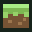

See what is running
Start, stop and restart servers. Check readiness, player counts and logs from the same panel.

NETHERNETYOUR WORLDS. YOUR SERVER.
Bring your Minecraft Bedrock servers together in one Windows panel. Manage worlds, helper accounts, add-ons and backups—without losing track of what is running.
Windows x64 · Local desktop app · Personal Bedrock servers
A little room to dream bigger.
The next adventure is waiting.
Snapshots and verified recovery backups.
A CALMER SERVER DESK
Keep the useful controls together, with clear status and deliberate changes.
Start, stop and restart servers. Check readiness, player counts and logs from the same panel.
Manage helper Microsoft accounts, console-player mappings and roles without exposing passwords in the UI.
Review local pack updates or check CurseForge releases with your own API key. Stage exact versions for the servers you choose.
Create protected snapshots, schedule backups and restore into a fresh server folder.
Check official stable releases, verify helper compatibility and follow the backup and update stages.
Keep servers in the background with tray controls. Open the full panel when you need it.
YOUR NEXT SESSION STARTS HERE
Download the Windows installer, review your server setup and keep your worlds on your own machine.
View the latest releaseGet the installer and compare its SHA-256 with the checksum in the release.
Choose your server folder or snapshot, review the LAN adapter and reserve the server addresses.
Sign in to helper accounts, check server readiness and manage the next session from the panel.
A local app, not a hosted Minecraft server. This website provides project information and downloads. Your Windows PC runs the panel and servers. Minecraft server software comes from Minecraft’s official download.
Current helper support: Bedrock 26.60, protocol 2225. Future protocol changes require a matching helper release. On-demand CurseForge checks require your own approved API key. Manual archive review works without one.